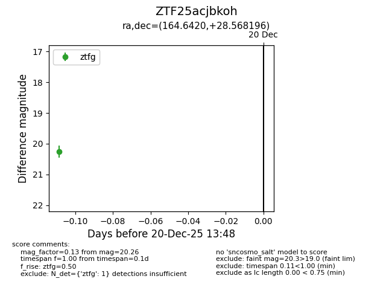
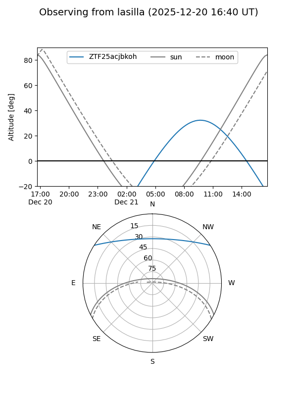
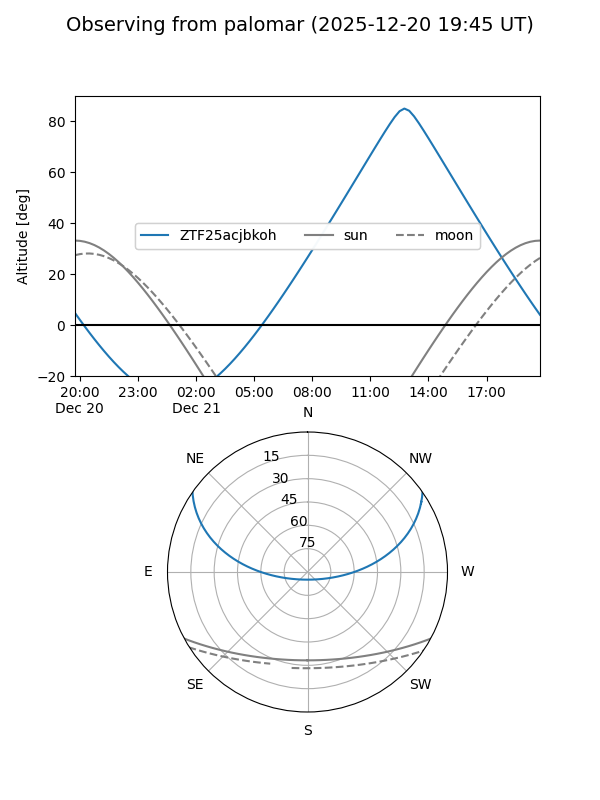

ZTF25acjbkoh
Target ZTF25acjbkoh at 2025-12-20 13:49
Aliases and brokers:
FINK: fink-portal.org/ZTF25acjbkoh
Lasair: lasair-ztf.lsst.ac.uk/objects/ZTF25acjbkoh
ALeRCE: alerce.online/object/ZTF25acjbkoh
alt names
ZTF25acjbkoh (ztf,fink_ztf)
Coordinates:
equatorial (ra, dec) = 164.6420,+28.56820
equatorial (HMS+DMS) = 10:58:34.09,+28:34:05.51
galactic (l, b) = (202.9988,+65.06613)
Flags:
Photometry:
last ztfg=20.26
1 ztfg detections
Lightcurve

Visibility


Additional plots